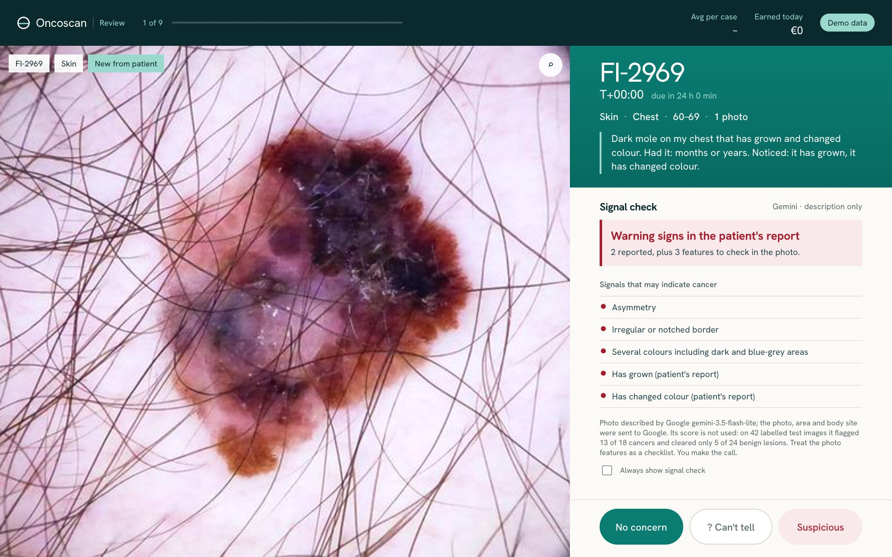

The problem in Finland
Far from a specialist. Stuck in a queue.
308 municipalities. 1 queue.
Today
Four problems we solve.
Where the path to a specialist breaks.
Late detection.
A worrying spot waits for an appointment.
Referral queue.
The specialist sits behind a referral.
Treatment start.
You still have to find and book a specialist.
No transparency.
You can't see where your case is.
Tiles show example data. Bottlenecks 1 to 3 are named in the challenge brief, Junction 2026.
For patients
Four steps to get results ASAP.
Worried about a mole that has changed, or a mouth sore that won't heal? This is what you do.
Answer in 24 hours.
The clock starts when you send. A specialist answers before it runs out.
See the specialist's viewBook the nearest.
If you need a visit: closest first, with free times.
See doctors and timesFor clinics
A specialist's opinion during the visit week.
For GPs and dentists who see something they are unsure about. Send it instead of waiting on a referral queue.

- In the visitPhotograph the findingWith a phone or the clinic's camera, plus what the patient reports.
- Minutes laterIt joins the specialist queueWith the patient's history and a checklist of warning signs drawn from it.
- Within 24 hA signed verdict comes backNo concern, better photo needed, or suspicious, with a short note.
- Same weekBook or reassureA suspicious result comes with appointment times at the nearest specialists.
In this demo a clinic sends a case through the same form as a patient.